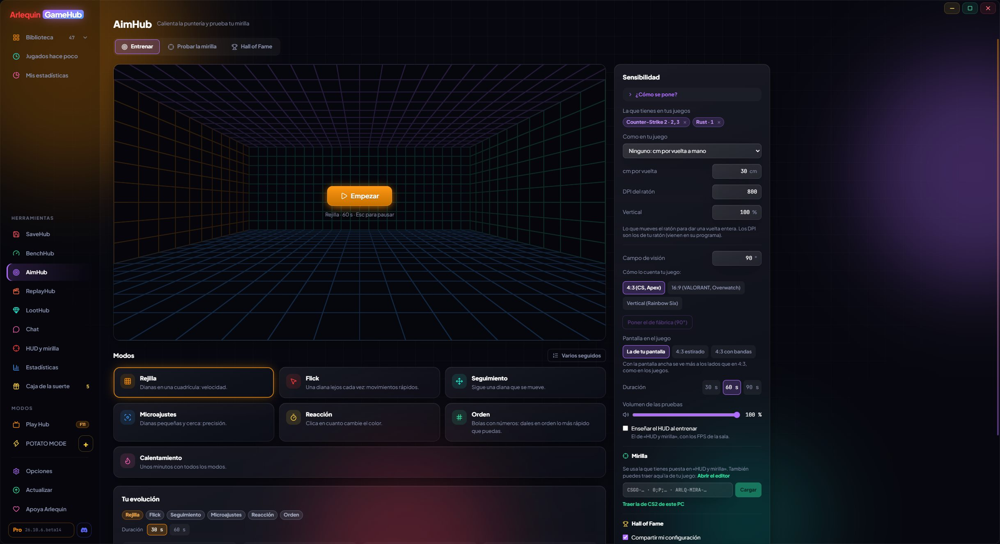

AimHub: nişan almanı ısıt
Oynamadan önce ısınmak ve nişangâhını denemek için, kendi hassasiyetinle kullanabileceğin 3 boyutlu bir oda.
AimHub, altı modlu birinci şahıs bir odadır: Izgara (hız), Flick (hızlı hareketler), Takip (hareketli hedefi izleme), Mikro ayar (hassasiyet), Reaksiyon (milisaniye cinsinden) ve Isınma (hepsinden birkaç dakika). Tıpkı oyunun gibi döner: oyunu, hassasiyetini ve fare DPI'ını seç (20'den fazla oyun: CS2, VALORANT, THE FINALS, Apex, Overwatch 2, Fortnite, Marvel Rivals, Rust…); GameHub, mümkün olan yerde oyundaki ayarını kendisi okur. Fareni Windows ivmesi olmadan kullanır ve ekranının yenileme hızında çalışır.
Nişangâhı dene bölümünde nişangâhını gerçek boyutunda; gökyüzü, çöl, kar, gece veya duman arka planları üzerinde, oyununun çözünürlüğünde görürsün; herhangi birinde kaybolursa seni uyarır. Denemelerin ilerlemenle birlikte bilgisayarında saklanır ve her moddaki en iyi denemen, takma adınla ve istersen ayarınla (hassasiyet, DPI, görüş alanı ve nişangâh) AimHub Hall of Fame'e gönderilebilir. Sıralamayı görmek ücretsizdir; başka bir oyuncunun ayarını kopyalamak ise ArlequinPro'nun parçasıdır.
Ayrıca: art arda birkaç mod, her oyunun görüş alanı, antrenman sırasında üstte HUD, Takipte hedefin üzerindeyken çalan bir ses ve Hall of Fame takma adın (BenchHub'dakiyle aynı). Sıralamayı burada, Hall of Fame sayfasında da görebilirsin.
Nasıl kullanılır
- AimHub yan çubukta, Hub'ların altında.
- Esc denemeyi duraklatır.
- Hall of Fame'de yer almak için: Seçenekler → Gizlilik ve veriler → AimHub.
- R testi yeniden başlatır (oynarken, duraklatılmışken veya sonunda).

Bir denemek ister misin?
⬇ Doğrudan indir 🛍️ Microsoft Store'dan indirWindows 10 ve 11 (64 bit) · Ücretsiz · Kendini günceller